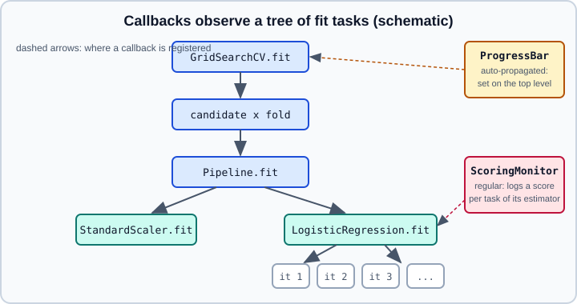

Callbacks: Progress & Scoring Monitoring (experimental)
|
This content was generated with the assistance of AI and should be verified against the official documentation before being relied on in production. |
This page covers the callback mechanism that scikit-learn added in version 1.9, which lets you watch the progress and the learning curve of a fit without changing the estimator. It targets scikit-learn 1.9 (1.9.0 appeared in June 2026 and 1.9.1, a bug-fix release, in September 2026) on Python 3.13, and the facts were checked on 2026-10-30 against the 1.9.1 documentation. Examples were run on Python 3.13 with scikit-learn 1.9.1 and rich on 2026-10-31. The callback API is experimental: the user guide says it is not yet implemented for all estimators and "may change without the usual deprecation cycle", so treat every name and signature below as subject to change, and pin the scikit-learn version of any code that uses it.
Everything before 1.9 had to be done by hand (see Monitoring without callbacks), and that is still what you do for estimators that do not support callbacks yet. Other pages cover the surrounding topics: the estimator API, pipelines, hyperparameter search, and the parallelism that interacts with callbacks. Deep-learning callbacks (early stopping, checkpoints, TensorBoard) are a different, much richer mechanism, described in Keras callbacks.
What a callback is
A callback is an object registered on an estimator, which scikit-learn calls at defined points while fit runs. It observes training; it is not a way to change the learning algorithm. The unit of work is called a task: usually one learning iteration, but the estimator decides. Tasks form a tree whose root is the fit of the estimator: a grid search has a task per candidate and fold, a pipeline has one task per step, and an iterative solver has one task per iteration. A task has a name, an id and a parent, and a callback is called at the beginning and at the end of each task.

Two kinds of callback exist, and the difference decides where you register them:
-
Regular callbacks, such as
ScoringMonitor, follow the learning of one estimator. They can be registered at any level of a composition. If a meta-estimator clones that estimator, the callback runs in each clone’sfit, so a grid search with 50 fits produces 50 sets of logs. -
Auto-propagated callbacks, such as
ProgressBar, are meant for the whole composition. You register them on the top-level meta-estimator, which hands them to every sub-estimator that supports callbacks. If the sub-estimators already have auto-propagated callbacks of their own, registering one on the top level raises an error (inside a search it is raised in each fit, soGridSearchCVreports that all fits failed). How deep the propagation goes is controlled by the callback’s ownmax_propagation_depth, where0means no propagation andNonemeans all nested levels.
Registering callbacks
Estimators that support callbacks have a set_callbacks method. It accepts one or several callbacks and attaches them to that estimator instance. In scikit-learn 1.9.1 the estimators that have it are LogisticRegression and LogisticRegressionCV, StandardScaler, Pipeline, GridSearchCV, RandomizedSearchCV, HalvingGridSearchCV and HalvingRandomSearchCV. LogisticRegression reports only with solver="lbfgs" (the default): with another solver fit emits a UserWarning saying the callbacks will be ignored during the solve. Other estimators, such as RandomForestClassifier, have no set_callbacks method at all, so calling it raises AttributeError. Support is still in progress, so check the list for your version before relying on it; hasattr(estimator, "set_callbacks") is a quick test.
from sklearn.callback import ProgressBar, ScoringMonitor
from sklearn.linear_model import LogisticRegression
logreg = LogisticRegression(max_iter=200)
logreg.set_callbacks(ProgressBar(), ScoringMonitor(scoring="accuracy"))set_callbacks only registers the callbacks; nothing is printed until fit runs.
Two details of the quoted example are worth keeping in mind. The documentation states that a regular callback runs in each clone’s fit when a meta-estimator clones the estimator; and the callback objects hold state, so keep a reference to the ScoringMonitor you want to read, as the next sections do.
ProgressBar
ProgressBar(max_propagation_depth=1) displays a progress bar for each iterative step of the estimator. It depends on the rich package, which must be installed separately (pip install rich). Its single parameter is the maximum depth of nested estimators that get their own bar: 0 shows only the outermost estimator, 1 (the default) adds one level, and None shows every level. Because it is auto-propagated, it belongs on the top-level estimator:
from sklearn.callback import ProgressBar
from sklearn.datasets import make_classification
from sklearn.linear_model import LogisticRegression
from sklearn.model_selection import GridSearchCV
from sklearn.pipeline import make_pipeline
from sklearn.preprocessing import StandardScaler
X, y = make_classification(n_samples=2000, n_features=30, random_state=0)
pipe = make_pipeline(StandardScaler(), LogisticRegression(max_iter=500))
search = GridSearchCV(pipe, {"logisticregression__C": [0.01, 0.1, 1, 10]}, cv=5)
# Register once, on the top-level meta-estimator; it is propagated to the
# pipeline, the scaler and the logistic regression.
search.set_callbacks(ProgressBar(max_propagation_depth=None))
search.fit(X, y)On fit, rich draws one bar per task, labelled with the task path, for example GridSearchCV - candidate-split-evaluation | Pipeline - fit #16 with the StandardScaler - fit and LogisticRegression - fit tasks nested under it, and a final GridSearchCV - refit-with-best-params group. Use a large max_propagation_depth only when you want to see the inside of every candidate; with the default of 1 a long search stays readable.
ScoringMonitor
ScoringMonitor(*, scoring) computes a score at the end of each task and keeps it, which gives you a learning curve over the iterations of a single fit. Its scoring argument takes the same values as everywhere else in scikit-learn: a scorer name such as "accuracy", a callable, None (the estimator’s default criterion), a list or tuple of unique names, a callable returning a dict, or a dict of names to callables. See Metrics & Scoring for the scorer vocabulary. The scorer is evaluated on the training data of the task, so the curve describes optimisation progress, not generalisation; for generalisation use a validation curve (Validation & Learning Curves) or hold-out scoring of your own.
from sklearn.callback import ScoringMonitor
from sklearn.datasets import make_classification
from sklearn.linear_model import LogisticRegression
X, y = make_classification(n_samples=2000, n_features=30, random_state=0)
monitor = ScoringMonitor(scoring="accuracy")
logreg = LogisticRegression(max_iter=200)
logreg.set_callbacks(monitor)
logreg.fit(X, y)
log = monitor.get_logs() # the most recent run
print(log.estimator_name, log.run_id)
print(log.data_as_pandas[["task_name", "task_id", "accuracy"]].head())Output (the run id is a random UUID and differs on every fit):
LogisticRegression 175a409d-46b3-4a05-bd83-f6151db688d0
task_name task_id accuracy
0 fit 0 0.9915
1 lbfgs-iter 0 0.9550
2 lbfgs-iter 1 0.9895
3 lbfgs-iter 2 0.9905
4 lbfgs-iter 3 0.9920
The first row scores the whole fit task; the following rows are the lbfgs iterations, whose training accuracy climbs from 0.955 towards the final 0.9915. If no score was recorded, for example because the estimator ignored the callbacks, get_logs raises ValueError ("No logs to retrieve").
get_logs(select="most_recent", include_lineage=False) returns a ScoringMonitorLog for the latest run, or a list of them with select="all". A run is one fit of the outermost estimator, so a grid search is one run however many candidates it contains. A log has run_id, estimator_name, timestamp, data (a list of dicts, one per recorded score) and data_as_pandas (the same rows as a DataFrame). The columns are task_id_path, parent_task_id_path, estimator_name, task_name, task_id, sequential_subtasks, and one column per score name. With include_lineage=True the log also contains rows for the ancestors of each scored task, with missing values for the scores, so you can reconstruct the tree. Plotting the score column against the iteration id gives the convergence curve; the gallery example "Analysis of the convergence of penalized logistic regression models" does exactly this.
Writing your own callback
Callbacks follow the FitCallback protocol: an object with setup(estimator, context), on_fit_task_begin(estimator, context, *, X=None, y=None, metadata=None, fitted_estimator=None), on_fit_task_end(...) with the same keywords, and teardown(estimator, context). The context is a CallbackContext describing the task, and fitted_estimator is a copy ready to predict or transform as if fitting had stopped at that point of the task, which is what lets a callback score intermediate states. on_fit_task_end returns a boolean stop that asks the current level of iterations to stop. For a callback that must be shared by a whole composition, the protocol AutoPropagatedCallback marks it as auto-propagated. The documentation does not describe a stability guarantee for this protocol, and the module sklearn.callback also has CallbackSupportMixin and the decorator with_callbacks for adding callback support to your own estimators (the gallery example "Supporting callbacks in third party estimators" shows how); because the whole API is experimental, a custom callback is the part most likely to need changes at the next release.
Callbacks, cloning and parallel jobs
Remember how cloning interacts with callbacks:
-
A callback registered on a sub-estimator that a meta-estimator clones runs in every clone. Logs from a regular callback therefore grow with the number of fits.
-
With
n_jobsgreater than 1 and process-based backends, a callback must survive being sent to a worker. Scikit-learn 1.9.1 fixed a bug where aScoringMonitorcombined with a multi-processing backend could fail with "Could not pickle the task to send it to the workers"; on 1.9.0 keep such searches single-process or upgrade to 1.9.1 or later. See Performance and Parallelism for the backends. -
If the top-level meta-estimator does not support callbacks, sub-estimators may still carry their own, but the documentation calls this "not optimal" and the callbacks may not deliver their full capability.
Monitoring without callbacks
For versions before 1.9, and for any estimator outside the supported list, the same questions are answered with ordinary features. These snippets use only long-standing API.
import numpy as np
from sklearn.datasets import make_classification
from sklearn.ensemble import HistGradientBoostingClassifier
from sklearn.linear_model import SGDClassifier
from sklearn.metrics import log_loss
from sklearn.model_selection import train_test_split
X, y = make_classification(n_samples=3000, n_features=20, random_state=0)
X_tr, X_va, y_tr, y_va = train_test_split(X, y, random_state=0, stratify=y)
# 1. Built-in per-iteration scores of HistGradientBoosting
hgb = HistGradientBoostingClassifier(
max_iter=200, early_stopping=True, validation_fraction=0.2,
n_iter_no_change=10, random_state=0,
).fit(X_tr, y_tr)
print("stopped after", hgb.n_iter_, "iterations;",
len(hgb.validation_score_), "validation scores recorded")
# 2. Staged predictions of a fitted booster, scored on held-out data
losses = [log_loss(y_va, p) for p in hgb.staged_predict_proba(X_va)]
print("best iteration on X_va:", int(np.argmin(losses)) + 1)
# 3. A manual monitoring loop with partial_fit
sgd = SGDClassifier(loss="log_loss", random_state=0)
history = []
for epoch in range(5):
sgd.partial_fit(X_tr, y_tr, classes=np.unique(y))
history.append(sgd.score(X_va, y_va))
print([round(h, 3) for h in history])Output:
stopped after 57 iterations; 58 validation scores recorded best iteration on X_va: 48 [0.875, 0.868, 0.875, 0.864, 0.867]
The first form uses the fitted attributes train_score_, validation_score_ and n_iter_ that HistGradientBoosting* estimators expose (see Gradient Boosting). The second uses staged_predict or staged_predict_proba on boosting ensembles. The third is the standard pattern for out-of-core learners: call partial_fit in a loop and evaluate yourself after each pass. Other estimators keep their own histories, for example MLPClassifier.loss_curve_ (see Neural networks: MLPClassifier & MLPRegressor) and the verbose option of many solvers, which prints the objective as it iterates. For a progress display over a search, verbose on GridSearchCV and joblib’s own reporting remain the portable options. For a full training dashboard with experiment tracking, see Experiment Tracking & MLOps.
Pitfalls
-
Treating the API as stable. It is experimental in 1.9; pin the version and expect changes without a deprecation period.
-
Expecting every estimator to report. Only the estimators listed in the user guide call the callbacks; for the rest do not expect output, and confirm with a tiny fit.
-
Mixing auto-propagated callbacks at several levels: if sub-estimators already carry them, registering on the top level raises an error. Register auto-propagated callbacks once, at the top.
-
Reading a
ScoringMonitorcurve as validation performance. It scores the training data of each task. -
Forgetting
richforProgressBar. -
Large logs: a regular callback inside a cross-validated search logs every candidate and fold.
-
Multi-process backends on 1.9.0 with
ScoringMonitor(fixed in 1.9.1).